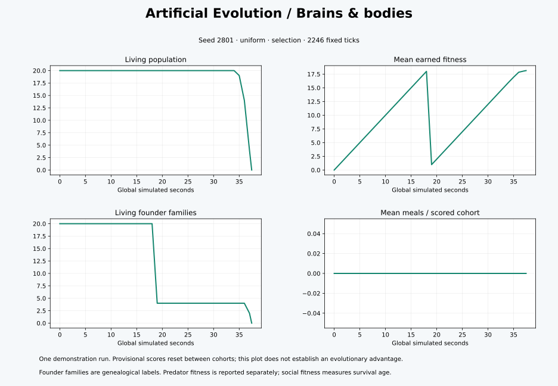

Version 1.0.0 · Run 67f76c26c6e5 · 2026-10-26T18:07:05.538015+00:00

{
"time": 37.43333333333333,
"generation": 2,
"population": 0,
"mean_fitness": 18.143726845049766,
"best_fitness": 19.405940594059583,
"living_mean_fitness": 0.0,
"mean_meals": 0.0,
"food": 0,
"births": 40,
"deaths": 40,
"families": 0,
"effective_families": 0.0,
"neural_rms": null,
"predators": 0,
"prey": 0,
"predator_mean_fitness": null
}{
"schema_version": 1,
"mode": "traits",
"environment": "uniform",
"algorithm": "selection",
"seed": 2801,
"population": 20,
"food_count": 0,
"mutation_rate": 0.1,
"mutation_scale": 0.1,
"generations": 2,
"duration": 600.0,
"fixed_speed": 60.0,
"body_mutation_rate": 0.25,
"body_mutation_scale": 0.08,
"population_cap": 300,
"regrowth_rate": 30.0,
"maturity_age": 15.0,
"birth_cooldown": 20.0,
"season_length": 1,
"season_food": [
150,
200,
75,
25
],
"cluster_shift": 120.0,
"reproductive_age": 60.0,
"predators": 20,
"episode_seconds": 60.0,
"groups": 10,
"food_access": "restricted",
"signaling": true,
"sharing": true,
"signals_hidden": false,
"risk_sensors": "intact",
"prey_sensors": "intact",
"predator_sensors": "intact",
"sample_interval": 1.0
}Complete run and controls · Population dataset · Lifetimes · Ancestry · Numeric genomes · PDF figure
Replay from the project: python simulator.py --replay PATH/TO/run.json --headless